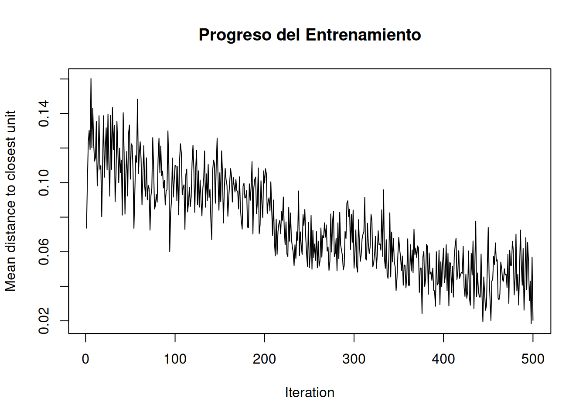
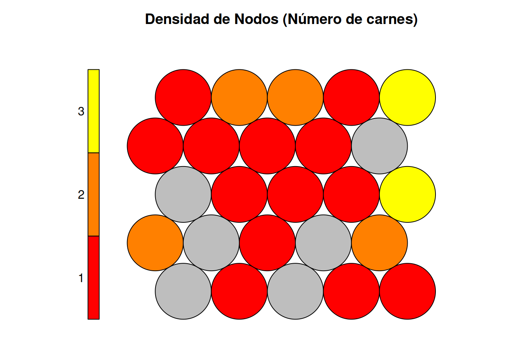
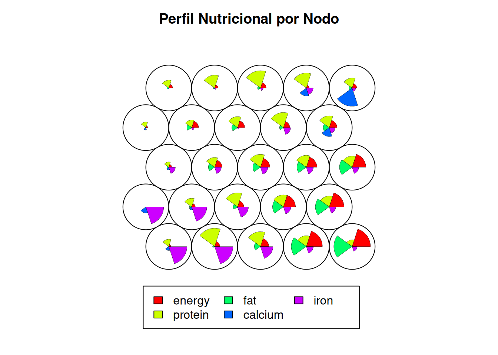
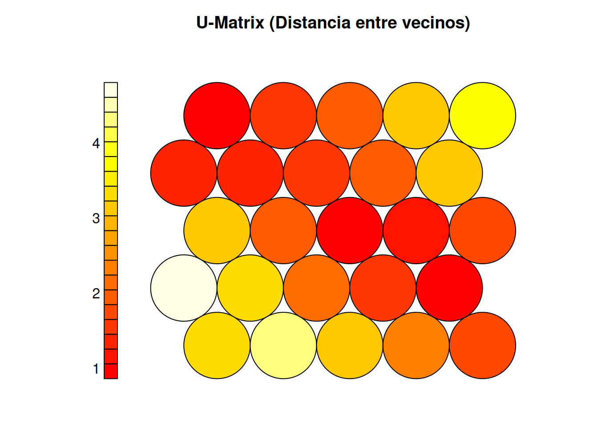
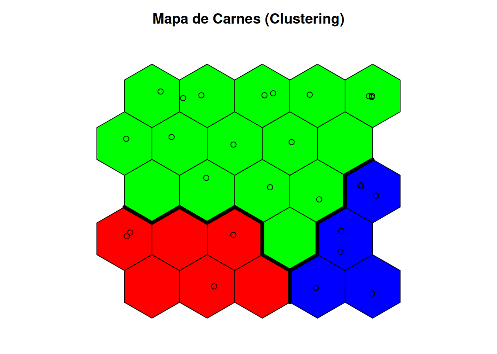

library("kohonen")
library("cluster.datasets")
library("ggplot2")5 Mapas auto-organizados
Ejemplos de algoritmos de cada clase
5.1 Ejemplo con R
El paquete kohonen implementa en R algoritmos SOM, incluyendo también herramientas para interrogar al mapa resultante y obtener predicciones.
En el ejemplo, vamos a utilizar el dataset nutrients.meat.fish.fowl.1959, que está incluido en el paquete cluster.datasets.
El conjunto de datos nutrients.meat.fish.fowl.1959 contiene información nutricional (calorías, proteínas, grasas, calcio, hierro) de diferentes tipos de carne. Nuestro objetivo al aplicar un SOM será agrupar estas carnes en un mapa 2D, de tal forma que las carnes nutricionalmente similares queden cerca unas de otras.
# 1. Cargar el dataset
data("nutrients.meat.fish.fowl.1959")
df <- nutrients.meat.fish.fowl.1959
# Miremos la estructura
head(df) name energy protein fat calcium iron
1 Braised beef 340 20 28 9 2.6
2 Hamburger 245 21 17 9 2.7
3 Roast beef 420 15 39 7 2.0
4 Beefsteak 375 19 32 9 2.6
5 Canned beef 180 22 10 17 3.7
6 Broiled chicken 115 20 3 8 1.4# 2. Preprocesamiento
# El nombre de la carne (columna 'name') no es un dato numérico para el cálculo,
# pero lo necesitamos para etiquetar el gráfico al final.
nombres_carnes <- df$name
# Seleccionamos solo las columnas numéricas (Nutrientes)
# Según la estructura usual de este dataset, la columna 1 es el nombre.
data_matrix <- as.matrix(df[, -1])
# 3. Escalado (NORMALIZACIÓN) - ¡Paso Crítico!
# Los SOM funcionan con distancias. Si las Calorías son 300 y el Hierro es 2,
# la variable Calorías dominará todo el mapa. Debemos escalar para que todas
# las variables tengan el mismo peso.
data_scaled <- scale(data_matrix)5.1.1 Creación y entrenamiento del SOM
Ahora, definimos la rejilla (grid) en la que vamos a proyectar los datos. La mejor opción suele ser un mapa hexagonal.
set.seed(123) # Para reproducibilidad
# 1. Definir la rejilla (Grid)
# Usaremos un mapa pequeño de 5x5 hexágonos (25 neuronas en total)
# dado que el dataset no es masivo.
som_grid <- somgrid(xdim = 5, ydim = 5, topo = "hexagonal")
# 2. Entrenar el modelo
# rlen: número de veces que el dataset completo se presenta a la red.
som_model <- som(data_scaled,
grid = som_grid,
rlen = 500,
alpha = c(0.05, 0.01), # Tasa de aprendizaje (inicio, fin)
keep.data = TRUE)
# Ver resumen del modelo
summary(som_model)SOM of size 5x5 with a hexagonal topology and a bubble neighbourhood function.
The number of data layers is 1.
Distance measure(s) used: sumofsquares.
Training data included: 27 objects.
Mean distance to the closest unit in the map: 0.306.5.1.2 Representación gráfica de los resultados
plot(som_model, type = "changes", main = "Progreso del Entrenamiento")

plot(som_model, type = "counts", main = "Densidad de Nodos (Número de carnes)")

plot(som_model, type = "codes", main = "Perfil Nutricional por Nodo",
palette.name = rainbow)

plot(som_model, type = "dist.neighbours", main = "U-Matrix (Distancia entre vecinos)")

Interpretación:
Colores oscuros: Distancia baja. Los nodos vecinos son muy similares.
Colores claros: Distancia alta (fronteras). Indican una separación fuerte entre grupos de datos (clusters naturales).
# Asignamos colores bonitos para los clusters
# Usamos clusters jerárquicos sobre los vectores de código del SOM
# para definir 3 grandes grupos (ej: Carnes rojas, Pescados, Aves/Otras)
som_cluster <- cutree(hclust(dist(som_model$codes[[1]])), 3)
# Paleta de colores para los 3 grupos
my_pal <- c("red", "blue", "green")
bg_colors <- my_pal[som_cluster]
# Graficamos el mapa final
plot(som_model, type = "mapping", pchs = 21, bg = bg_colors, shape = "straight",
main = "Mapa de Carnes (Clustering)")
# Añadimos el texto (nombres de las carnes) al mapa
add.cluster.boundaries(som_model, som_cluster)
